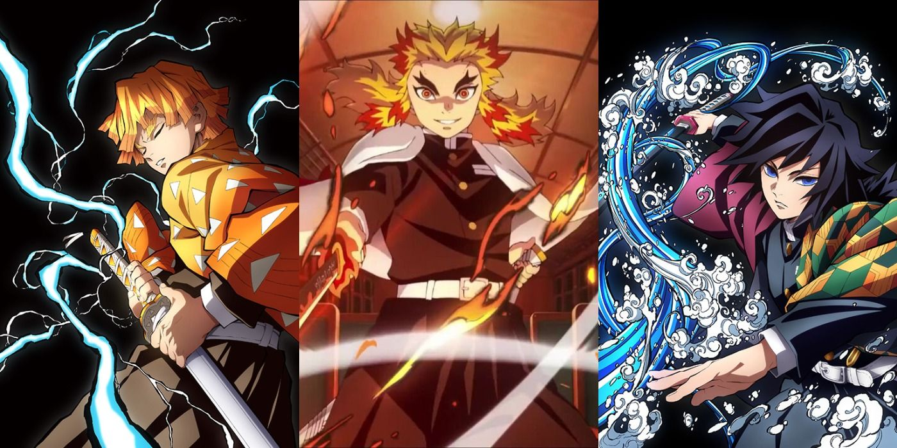

Demon Slayer
Demon Slayer ook wel 鬼滅の刃, Kimetsu no Yaiba genoemd heeft dan ook een speciaal plekje in mijn hart. De animatie van deze anime is dan ook ontzettend schitterend, en heeft een eigen unieke style. het verhaal is meestal droevig maar zeer zeker meeslepend. De anime gaat over tanjiro die een Demon Slayer wordt om zijn zusje te kunnen helpen met een probleem, ze is zelf een Demon geworden, maar niet zomaar een demon, ze heeft haar krachten namelijk onder controle. Tanjiro en zijn zusje gaan dus op avontuur op een oplossing hiervoor te kunnen vinden. Het verhaal is erg onroerend en meeslepen, vandaar dat het bij mij in de top staat.
Characters
- Tanjiro Kamado
- Nezuko Kamado
- Zenitsu Agatsuma
- Inosuke Hashibira
- Kanao Tsuyuri
- Giyu Tomioka
- Kyojuro Rengoku
- Shinobu Kocho
- Tengen Uzui
- Muzan Kibutsuji
Demon Slayer volgt Tanjiro Kamado, een demonenjager die zijn zus Nezuko redt na een demonenaanval op hun familie. Samen met medejagers Zenitsu en Inosuke, onder leiding van mentor Kyojuro Rengoku, strijden ze tegen demonen, met Muzan Kibutsuji als belangrijkste antagonist. De serie staat bekend om de diverse en memorabele personages die bijdragen aan het meeslepende verhaal.

Verhaal Arcs
- Final Selection Arc
- Kidnapper's Bog Arc
- Asakusa Arc
- Tsuzumi Mansion Arc
- Mount Natagumo Arc
- Rehabilitation Training Arc
- Mugen Train Arc
- Entertainment District Arc
- Swordsmith Village Arc
- Hashira Training Arc
- Final Battle Arc
Demon Slayer heeft verschillende spannende verhalen. In het ene verhaal traint Tanjiro hard en vecht hij tegen demonen. In een ander verhaal maken Tanjiro en zijn vrienden een riskante reis met een speciale trein. Er is ook een verhaal waarin ze te maken krijgen met problemen in de wereld van de demonen. Elk verhaal heeft leuke gevechten. Het verhaal draait om het vinden van een genezing voor Nezuko, die een demon is geworden.
Techniques and Abilities
- Water Breathing
- Thunder Breathing
- Beast Breathing
- Flame Breathing
- Mist Breathing
- Cursed Energy Manipulation
- Blood Demon Art
In Demon Slayer gebruiken personages krachtige zwaardtechnieken zoals "Water Breathing" en speciale ademtechnieken in gevechten tegen demonen. Ze dragen unieke "Nichirin Swords" met speciale eigenschappen, en sommige hebben individuele vaardigheden zoals de "Total Concentration" ademtechniek. Deze technieken voegen intensiteit en visuele pracht toe aan de gevechten in de serie.
Mijn favoriete gebeurtenis en OST
SPOILERS!
Fight tussen Tengen en Gyutaro, geweldig!